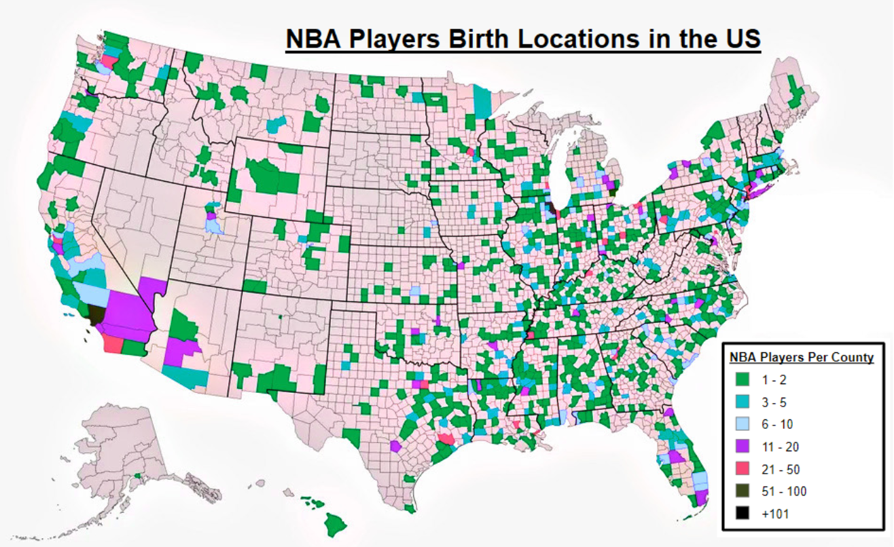

In Which State Are the Most NBA Players Born?
By Kasey Noguchi | March 30, 2021

NBA players come from all over the United States and even different countries. Since being established in 1949 The NBA has grown from 17 teams to 30 teams and is still continuing to grow. With so many teams, the amount of players has also grown, creating a diverse spread in hometowns throughout the 50 states.
Although many fans can list all their favorite player’s stats, most people don’t know where or how these NBA players grew up. The majority of players don’t play for the team in the state that they were born or grew up in. The strongest producing cities include New York City, Los Angeles, Chicago, etc. It is expected to see many players come from these cities as they have some of the highest population densities across the country.
The state of California has been the most popular birthplace of 416 players, while Vermont hasn’t had a single player debut in the NBA. During the 2016 - 2017 NBA season 46 out of 428, or 10.75%, of active players were born in California. The most populated city in the US, New York with a population of 18.8 million falls short compared to Los Angeles, population 12.4 million, when it comes to producing NBA talent today. Los Angeles is the birthplace of 114 NBA players while New York City Trails with 106 Players.
Outside of the United States, Canada has had 42 people play in the NBA with 14 of them being born in Toronto. France and Germany come behind Canada with 28 and 25 players respectively.
Here are the 5 most common states with notable players. (These numbers include both retired and current players):